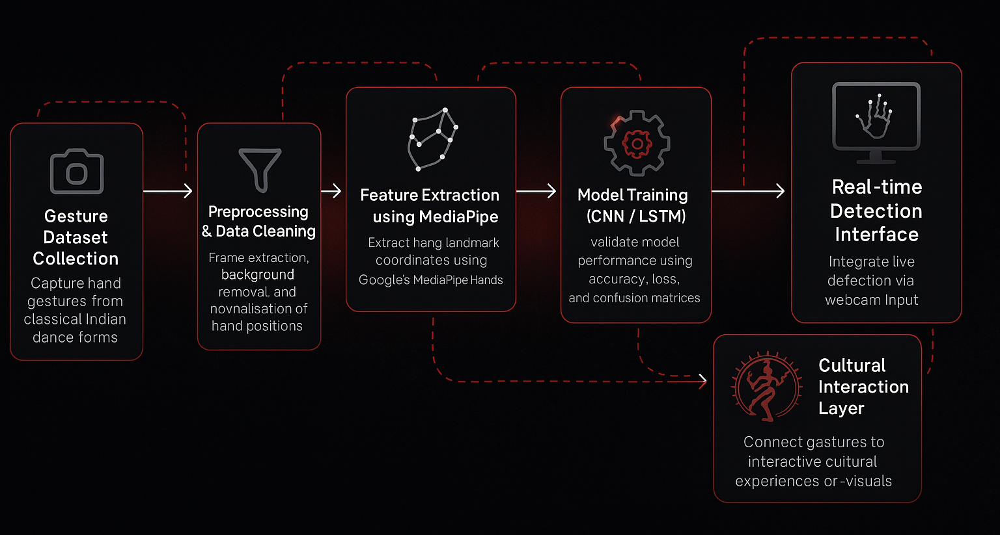

Mudra Detection
Mudra Detection explores the intersection of traditional art and modern computation by translating classical Indian dance gestures into interactive digital experiences. Using ml5.js and p5.js, the project recognises Bharatanatyam mudras in real time and plays corresponding Carnatic music, turning cultural expression into an engaging, sensory learning tool. Through this process, I discovered how machine learning can preserve and reinterpret culture while emphasising the ethical responsibilities of dataset creation and accuracy. It deepened my understanding of computational workflows, model training, and how technology can support creative education when approached thoughtfully.
Mudras & Varnams
This project recognises five Bharatanatyam mudras and plays a corresponding Carnatic varnam for each:
- Arala: Chalamela
- Kapita: Ninnu Kori
- Kartari: Sami Daya Varnam
- Kataka Mukha: Vanajakshi
- Mayura: Jalajakshi
Workflow
Main Tools
- p5.js (Locally): Used for handling the webcam feed, drawing visuals, sound integration, and processing CSV files locally to extract names, paths of images, and the 21 keypoints data.
- ml5.js: For using the handpose model and integrating a trained neural network.
- Neural Network Model: Trained using your own dataset of hand images.
- HTML/CSS: To build the webpage interface and display live predictions.
- VS Code: Used for training both the machine learning (ML) and convolutional neural network (CNN) models.
- Python: Set up the local server for hosting the project and organizing the initial CSV files with image names and paths.
- RStudio: For building and managing the interface to display the project outputs.
Process
We began by capturing images of five Bharatanatyam mudras — Arala, Kapita, Kartari, Kataka Mukha, and Mayura — performed by multiple people. These images were organised into separate folders and uploaded to Google Drive.
Using Python, we generated path2.csv containing the name and path of each image. This CSV, along with the images, was used to extract 21 hand keypoints through the ml5.js handpose model, resulting in a new dataset file: hand_keypoints.csv.
We trained a Multi-Layer Perceptron (MLP) model using this dataset, producing three output files essential for prediction:
model.jsonmodel_meta.jsonmodel.weights.bin
Through this process, we understood the core difference between the two major approaches: ml5.neuralNetwork() for MLPs and ml5.featureExtractor() for CNN-based models.
We sourced Carnatic varnam audio clips from YouTube and integrated them into p5.js for real-time mudra detection using the webcam. Each mudra was mapped to its corresponding audio, creating an interactive cultural experience.
Throughout development, we tested with smaller image sets and simplified CSVs to validate each step before scaling up. Despite this incremental approach, the final dataset introduced challenges that required iterative debugging and refinement.
Gesture Recognition
Code & Resources
Challenges and Insights
- Handpose model detected 43 points instead of 42. Removed extra “which hand” point by telling the python file to ignore that column in the excel sheet to fix NaN errors in graphs.
-


- Browsers block direct local file access. Used
python -m http.server 8000to servemodel.jsonand audio for proper testing. -

- CNN training failed due to limited data; switched to Multi-Layer Perceptron (MLP).
- Dataset prep challenges: Extracting 21 keypoints from images had missing data. Resolved by generating
path2.csvfor accurate keypoint extraction. - Mayura and Arala detection glitches due to inconsistent hand postures in training images.
- Detection failed for hands with paint, charcoal, or non-white backgrounds.
Future Scope
- Expand the dataset to include more mudras and variations, improving model accuracy and robustness.
- Integrate additional classical dance forms for a more comprehensive cultural recognition system.
- Implement real-time multi-person detection to support group performances and collaborative learning.
- Enhance audio-visual feedback by synchronising gestures with more complex music or lighting effects.
- Deploy the system as a web or mobile app for wider access in educational and performance contexts.
- Explore AI-driven gesture suggestions or corrections to aid learning and teaching of classical dance.